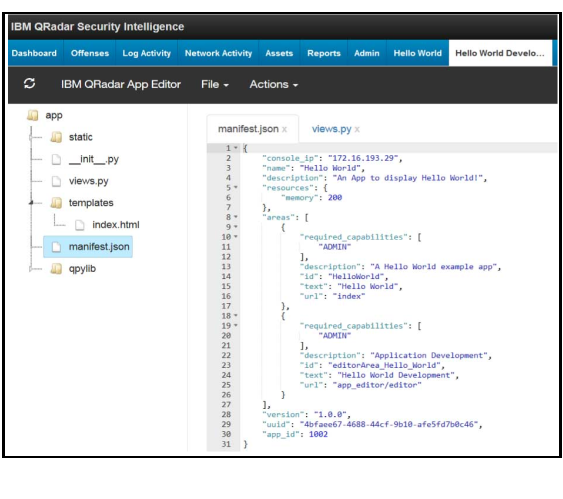
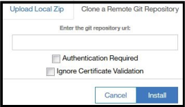

Starting the QRadar App Editor
Start the IBM® QRadar® App Editor and edit an existing app, create a new app, or access helpful resources.
Procedure
-
Open
the Admin settings:
- In IBM QRadar V7.3.0 or earlier, click the Admin tab.
-
In IBM
QRadar V7.3.1 and later, click the navigation menu
(
 ), and then click Admin to open the admin tab.
), and then click Admin to open the admin tab.
-
On the navigation menu, click Apps, and then click the
Develop Applications icon.
The following table shows the tiles that you can select on the IBM Application Development Manager window.
Table 1. QRadar App Editor tiles Tile Description New App Develop a new app by using the Hello World built-in template or by selecting one of the other templates that you clone from a Git repository. Existing App Edit or develop an existing app that you import into the QRadar App Editor, or clone from a Git repository. Resources Development resources Getting Started Video Learn to use the QRadar App Editor. -
To develop a new app that uses the one of the available templates, click the New
App tile.
- Select a template.
- Type a name, description, and version for your new app.
- Click Install to add the new app development tab that includes the editor to your QRadar Console.
-
Refresh your browser to see the tab for the app in development mode in QRadar.
The Hello World app is an app that features a custom tab, so you can see a second tab that shows the app in live mode without the editor. You might have to wait for a short time before the tabs appear in the user interface. Any app that you install shows the development tab with the editor and whatever functionality the app brings with it, for example the app might show a custom column or a custom tab.
If you install the Hello World template, you can see the Hello World app in normal install mode without the editor on the first tab, and in development mode on the second tab. Use the App Editor to develop your app from the development tab.
Some app templates might not be QRadar tabs so you only get the development mode tab, for example, you only see one tab when you select the dashboard_items template.
The following screen capture shows an example of the Hello World app in the App Editor tab.
Figure 1. Hello World app in the editor 
-
To edit and develop existing apps by importing the files into the QRadar App Editor, click the
Existing App tile.
- To select an existing app (.zip file), click
Browse to find the local app, or drag and drop an app into the app drop box.
Note: You can't import an app that is packaged as an extension that you download from the App Exchange. Apps that are packaged as extensions are only installed through the Extensions Management tool in the QRadar Console and are not editable in the App Editor. You can import and edit the app only in the app package (.zip) format.
- To clone an app from a Git repository, type the Git repository URL in the Enter
the git repository url field that is shown in the following image:
Figure 2. Clone a remote Git repository - Select the Authentication Required check box if you are required to provide credentials to clone the app.
- Select the Ignore Certificate Validation check box to turn off certificate validation when you download the app from the Git repository. This feature is useful when you're using a local repository that you trust and you know the certificates are not current but you want to turn off the warnings.
- To select an existing app (.zip file), click
Browse to find the local app, or drag and drop an app into the app drop box.
- To configure a proxy to connect the App Editor to the GIT repository for sample apps or to clone apps, click Proxy Settings. Then, type a http address and a port number to connect to your proxy.
-
Click Install to add the app development tab for the existing app to
your QRadar user interface,
and then refresh your browser to see the tab.
You might have to wait for a short time before the tab for the app appears in QRadar.